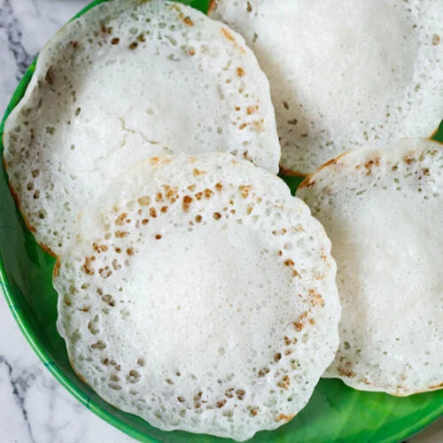

Return to home page

Appam (also known as "palappam") are tasty, lacy and fluffy pancakes from the Kerala
cuisine that are made from ground, fermented rice and coconut batter.
Ingredients
- 1.5 cups regular rice or parboiled or half-half of both types
- 2 cups water for soaking
- ¼ cup thick poha (aval or flattened rice) or cooked rice or puffed rice
- ½ cup grated fresh coconut
- ¾ cup water or as needed for blending or grinding batter
- ½ teaspoon instant yeast or ¾ teaspoon dry active yeast
- ½ teaspoon salt or add as required
- tablespoons sugar or add as required
Instructions
- Step 1:
- Rinse rice in water for a couple of times.
- Step 2:
- Soak rice in water for 4 to 5 hours.
- Step 3:
- Drain all the water and then add the soaked rice to mixer-grinder
or blender jar.
Also add the grated coconut, cooked rice or poha
(aval or flattened rice), salt and
sugar.
- Step 4:
- Add water and grind all the ingredients to a smooth flowing
batter
- Step 5:
- Transfer the batter in a medium to large bowl.
- Step 6:
- With Instant Yeast: Sprinkle the Instant yeast (or rapid rising yeast) all over the
batter. Mix thoroughly and evenly. Cover the bowl and set aside to ferment for
1 to 2 hours until the batter doubles in volume and has plenty of air-pockets.
- Step 7:
- With Dry Active Yeast: Take about 1 to 2 tablespoons of lukewarm water in a
bowl. Then add the dry active yeast and stir to mix well. Add this yeast solution
to the batter and mix thoroughly. Cover and keep aside for fermenting overnight or for
8 to 12 hours or more depending on the temperature conditions. The batter will rise and
increase in volume the next day.
- Step 8:
- a kadai or an appam pan with handles at the sides. Spread some oil on the appam
pan with a spoon. If using nonstick pan, then skip smearing the oil.
- Step 9:
- pread a ladle full of the batter (about ⅓ to ¼ cup). Turn and tilt the pan so as to
spread the batter to a neat round circle. Keep heat to medium-low or medium. Regulate the
heat as needed when cooking.
- Step 10:
- Drizzle some oil on the sides if you prefer.
- Step 11:
- Cover the pan with a lid and let the appam cook. The base would become nicely light
golden with crispy edges.
- Step 12:
- remove the cooked appam with a spatula. Make the remaining batches of appam this way.
If the pan becomes too hot then reduce the heat so that the batter is easy to spread
when you tilt the pan.
- Step 13:
- Keep the prepared appams covered with a kitchen towel.
- Step 14:
- the appam hot or warm with vegetable stew or coconut milk that has been sweetened with
jaggery and flavored with a bit of cardamom powder.
Return to top
Return to home page